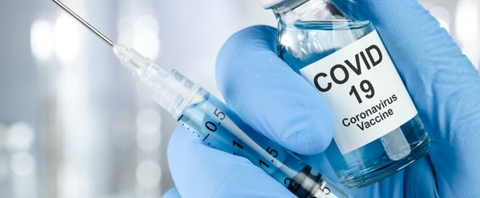
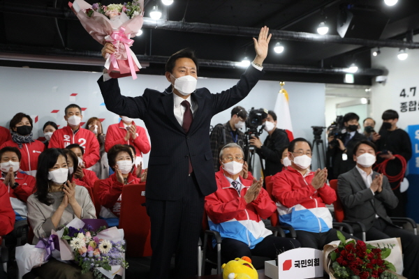

시민이 행복한 도시, 서울
시민이 행복한 도시, 서울
2021년 2월 26일 코로나19 백신접종이 시작되었습니다. 1분기 코로나 예방 접종은 코로나19 환자 진료 의료기관 종사자들을 우선으로 시행되었습니다. 2분기에는 65세 노인, 재가복지 시설 이용자와 종사자, 의료기관과 약국 종사자, 장애인, 노숙인 시설의 입사자와 종사자를 대상으로 접종이 진행됩니다. 2분기 접종대상자 접종시기/장소 확인하기
개표 결과 오 후보는 57.5%의 득표율로 39.18%를 얻은 더불어민주당 박영선 후보를 18.32% 포인트 차이로 눌렀습니다. 개표 중반 당선이 확실시되자 오 후보는 "엄중한 시기 코로나19로 고통받는 시민을 위해 분골쇄신하겠다"는 당선 소감을 밝혔습니다. 오세훈 서울시장 홈페이지 구경하기